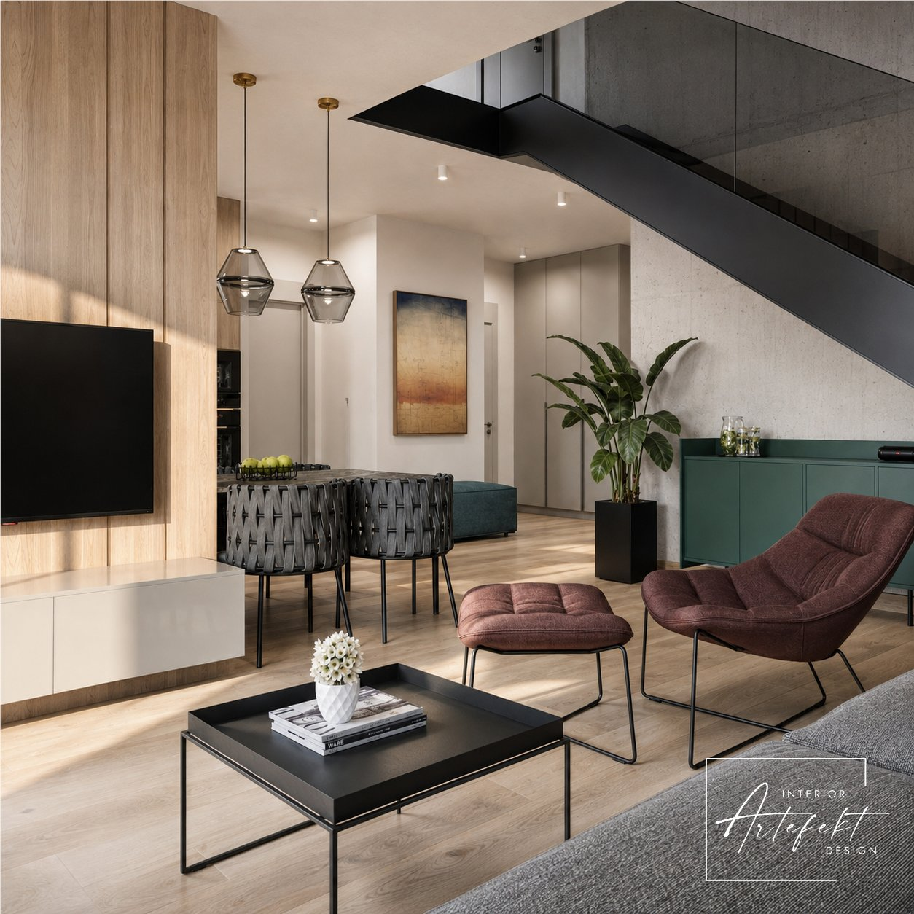

01Przed odbiorem mieszkania
Zmiany lokatorskie
Analizujemy rzut deweloperski i sprawdzamy, czy układ odpowiada codzienności domowników. Zanim rozpoczną się prace, porządkujemy funkcję, ściany, instalacje oraz punkty elektryczne.
Otrzymujesz czytelny plan zmian, który można przekazać deweloperowi. To dobry moment, żeby uniknąć późniejszych przeróbek i niepotrzebnych kosztów.
- Analiza rzutu deweloperskiego
- Korekta układu ścian i otworów
- Punkty elektryczne i hydrauliczne
- Rysunek do przekazania deweloperowi
Etap · przed odbiorem
Zapytaj o zmiany ↗